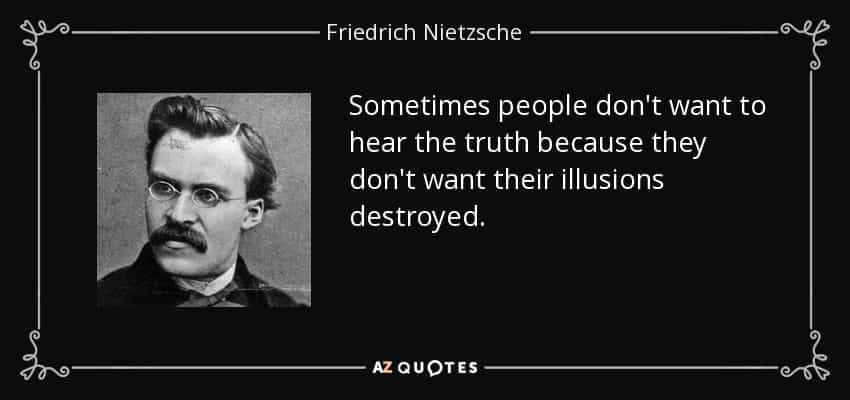
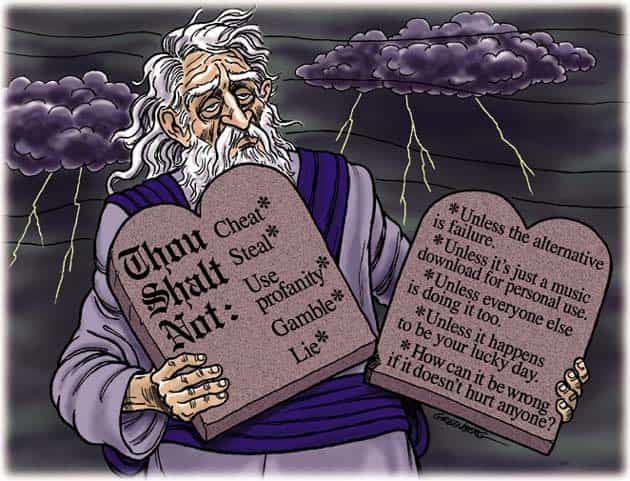

We have obviously come to the end of the West and Western civilization as we know it. No longer does it take a sociological “expert” or someone with a university degree to argue the point. Now it’s apparent all across the board. Our Western culture, whatever that even is anymore, is fastly disappearing and dying. And we’re letting it happen without even putting up a fight. This, I argue, will be to our own deserved demise.
We need to take a cold, hard look at what has led the West down the road of cultural ruin. After all, we’re only getting what we’ve ordered not too long ago.
Nietzsche the Prophet

I steadfastly argue that the single greatest factor that has led the west into the shitstorm it is now faced with is the abolishment of God and its resignation from all things even remotely Christian. Simply, we became inconvenienced with and ashamed of God and His statues regarding how we ought to orchestrate our lives. Even after the founding fathers of the West chose God-fearing, Biblical statutes to orient the ethical direction of the free world, we chose to balk at the freedoms and blessings afforded us under its banner and umbrella. Excuse my bluntness, but what the fuck?
What the hell was the big problem to begin with, that our Western society had to get rid of God and become so secular? Was it the allure of all things dark, forbidden, and sinful, much like the tempting apple in the Garden of Eden? Or was it just rotten, base human nature that tends to fuck up everything it’s given unless its spiritual self wakes up and enlightens the individual to better living? Or perhaps it was it the sins of the Catholic Church at large throughout world history, with its Crusades and and Inquisitions?
Any reasonable, sane person would understand that just because there is a killer loose in Disneyland, it doesn’t imply that the fault lies with Mickey Mouse. Anyone with even the slightest amount of intellect should be able to discern the obvious difference between what is faith and what is religion: one is a belief system that ordains personal decisions and and conduct of life at large, the other is a social construct of political yoke that serves to bind its members to its bylaws, rules and regulations.
Then again, the same applies to any secret society, alma matter, or club at large. So let’s get real for a moment and ask the hard, central question: what was wrong with the statues and morals of the God of Christianity, that we, as the West at large, decided to dump Him and move out from under His protective hand, as it were?
I suddenly recall a report that came out about the public school system in Canada back 1988, after the government decided to pull the Lord’s Prayer from schools in Ontario, where I spent the majority of my youth. What followed was a plummeting of school grades across the board, funny as that may seem. Don’t try to connect the dots, only consider the consequences at face value. The bottom line is, something happened in conjunction with this paradigm shift, and it wasn’t for anyone’s betterment.
Friedrich Nietzsche was right with his “death of God” analogy back in the day. We decided to kill God off from our lives and our society – societies that were largely built on Biblical principles and safeguards to ensure the posterity and safety of its people – and we left the door open for a horde of diverse and tumultuous demons to come in. We made our collective bed, in which we now lay. And the wages of sin is death. How fucking inconvenient for us!
The Fallacy of Relative Morality

There’s really no use or sense in complaining. It was a completely willful and conscious decision by us as a people and a collective society. God didn’t fit into our big picture and so we discarded the nagging voice of right and truth. We wanted our very own, custom-tailored, relative morality. We wanted to all be special snowflakes who would have their personalized cake and eat it, too. And in our deliberately blind gluttony, heresy, hedonism and salaciousness, we laid the groundwork for the inescapable law of reaping as we’d sown. Hey, don’t be fooled!
God is not mocked, and neither is the still, small voice of common sense and conscience within each and every one of us.When the dam broke, we were too ignorant to fix it. We let the landslide advance, unabated. The West let in the aggressive demands and doctrines of the east, the doctrines of which were adverse and foreign to the West to begin with.
The healthy not only tolerated but sought to accommodate the complaints and wishes of the perverse. The waters became muddied, unassimilable, and undrinkable. We were like spectators at the Colosseum, watching our own, unethical passion play unfold before our eyes, amused and sedated by it all at the same time. Things went from bad to worse and we just clamored for more fun, frills, and entertainment to fill our empty heads and void lives. Anything to dull the unnerving voice and moment of truth that kept beckoning to each and every one of us.
We didn’t protect our borders, our customs, our beliefs or our values, because we didn’t respect what we had. Someone else built the house which we inhabited; it wasn’t any skin off our own backs. We had no more sense of collective self, of tribe, clan or us. It became every dog for themselves. Me, me, me and even more me. Not you, not us. Just more of what’s in it for me, for my own, personal benefit, entertainment and pleasure. We took it all for granted, and now it’s being taken away from us.
With the death of God, we adopted new gods, albeit lesser gods at that. Mock gods like those offered at the altar of television, a conduit that taught us to believe whatever was fed through it; the media, who we believed all too eagerly at face value, without enough critical sense to question absolutely everything and ask the crucial and central question: “In whose interest is this message being sold to us?”
Popular music and its altar of indoctrination that has been admittedly so stealthy and shrewd, that even I, as a musical artist for nearly 20 years, can only marvel at its potency in conditioning the behaviors and attitudes of its audience.
Only as you age and grow as a person do you begin to see more clearly, but only if you steer clear of the mass sedation being force-fed all around you. That said, these new faux gods—and many others like the aforementioned—have filled the spiritual vacuum left behind by the absence of light that took immediate effect following the death of God, as foreseen by the accidental prophet, Nietzsche.
The Wages of Sin
In hindsight, we, as the West, have raped, spit on, shamed and insulted the Christian values that our lands were built on. We’ve become so goddamned secular, so boastful in our arrogant pride, that we’ve been ignorant of replacing the dismissed guards of our ethics and societal self with new, virtuous guardians of any kind. We’ve simply let ourselves drift, happily clueless, on our sea of indulgence and hedonistic pleasure. No one saw the hordes in waiting, and now it’s too late.
In our weakened state of constant self-gratification, we, as the West, have become weak. We’ve become milksops: easily offended and readily yielding, fragile individuals who hide behind the cloak of Big Brother. How the prolific words of Benjamin Franklin ring loudly now: “Those Who Sacrifice Liberty For Security Deserve Neither.” Indeed.
Even what’s left of our weakened, watered-down Christianity has become a feminized, ineffective, dead symbol of religious ritualism and ineffective, empty clamor. Gone are the strong men of old, the spirit of the founding fathers. Gone is the bravado, the chest held high with its breastplate of uprightness, the strong and unmoving fortitude that was ready and able to wield the sword of truth and brandish the shield of faith. Woe to us, for gone is the faith that was steadfast, the powerful beliefs that steered the moral uprightness of entire societies. We’ve got it coming to us, folks. In spades.
Summa Summarum
We need that old time Christian warrior mentality now more than ever. Our lands need it. Our people need it. The West needs it. Because the West will not survive without a return to its Christian roots. The secular mindset will not accommodate laws to protect the West, for were it able to provide that, it would have offered them up already. The proof is in the pudding, we’ve already seen the degeneration and decline of morality and societal spine under the banner of secularism.
No religion, no bullshit. Just rock solid Christian values and respect for the freedoms afforded by the vastly gracious nature of Christian and Biblical beliefs. The proof is in our past, if you need further evidence.What have you got to lose? Only the last, scarce remnants of your personal freedoms that are all being stripped away, falling through your fingers, if you choose to remain embedded in secular indoctrination. And if that be your choice, good riddance.
Read More: The Traditional West Is Man’s Best Civilization